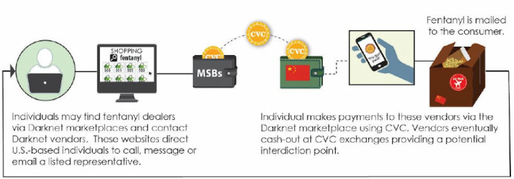
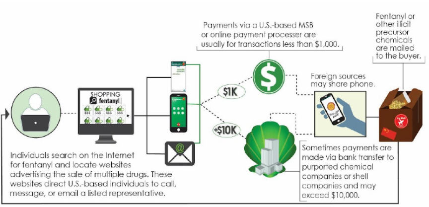
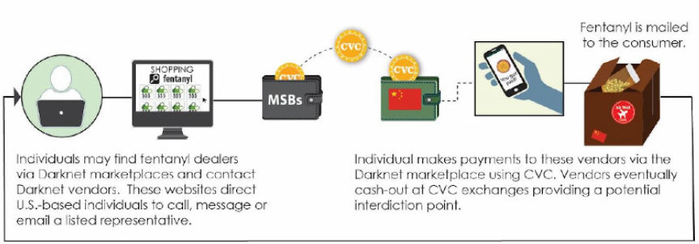
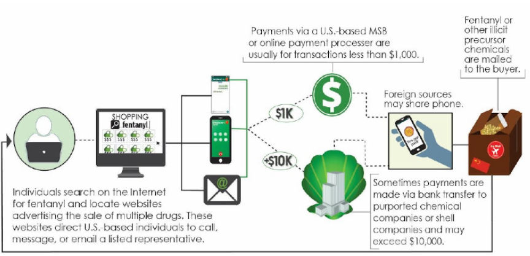

White House Advisory on Crypto and Darkweb Markets
~7 min read | Published on 2019-08-22, tagged DarkWeb, General-News using 1713 words.
The White House announced actions to crack down on fentanyl trafficking in the United States through recent private-sector advisories addressed to domestic and foreign businesses in the private sector. The announcement and advisories specifically highlight the role played by both darkweb marketplaces and cryptocurrencies in the international opioid trafficking arena.
The advisories focused on four elements of fentanyl trafficking: manufacturing, marketing, movement, and money. The White House’s summaries for all four are available below as well as well as links to advisories covering all four topics.
Manufacturing: Describes the unique characteristics of manufacturing illicit synthetic opioids to assist stakeholders in combating the scourge of fentanyl and other synthetic opioids. Marketing: Raises awareness about the marketing and sale of illicit fentanyl via vulnerable and unsuspecting private-sector digital platforms, including social media, e-commerce sites, and online forums. Movement: Increases awareness about the entities at each stage of the illicit fentanyl and synthetic opioids supply chain, including information that can help identify and prevent the movement of these deadly drugs into the United States and during domestic distribution. Money: Alerts financial institutions to help them detect and report on illicit financial schemes and money laundering mechanisms related to the trafficking of fentanyl, fentanyl analogues, and other synthetic opioids.
For our purposes, the advisories on the marketing, movement, and money categories contain the most relevant information. Each document contained detailed information about a particular element of the fentanyl drug trade, examples of how each element is involved in the drug trade, and “red flags” for companies in the private sector to identify.
Marketing
Opioids on the Darkweb and Clearnet
Customers seeking to buy synthetic opioids can readily find them on the Darknet and Clearnet. Some Darknet marketplaces exist primarily to sell drugs, and the illicit substances available on those marketplaces vary greatly, ranging from diverted pharmaceutical products to illicit drugs with no legitimate medical purpose. Some Clearnet e-commerce websites also openly advertise and sell synthetic opioids and the chemicals or equipment used to make or process them; these websites are generally hosted outside of the United States but advertise their illicit products globally.
The advantages of darkweb marketplaces over regular drug transactions.
Darknet marketplaces offer criminal buyers and sellers multiple advantages over street drug sales. Illicit buyers can mask their identities and geographic locations by using the Tor network, employing encrypted communications and purchasing goods and services with virtual currency that may enhance their anonymity, without having to leave their homes. Darknet marketplaces also offer buyers a greater variety and quantity of illicit drugs. Criminal actors find these platforms attractive because they have access to a larger customer base. Many Darknet marketplaces are readily accessible to anyone with the correct .onion URL.
These marketplaces, and the websites that customers can use to find them, usually include guides on how to purchase illicit goods, such as synthetic opioids, on their platforms. Darknet marketplaces often have their own forums on which customers can read about different drugs, vendors’ reputations, products, or operational security and how to use certain virtual currencies to obfuscate their activities. Vendors advertise their products— including illicitly-produced synthetic opioids, counterfeit pharmaceutical opioids, and legitimate but diverted pharmaceutical opioids—with pictures and detailed descriptions of their products, often highlighting their operational security, commitment to customer service, and reliability in delivery. Vendors ship drugs to their customers using the postal service and consignment shippers.
The Darknetmarkets Subreddit Shutdown
The adviseries contained case study and example subcategories. In one of the examples of the role of the internet in the marketing of opioids, the /r/darknetmarkets subreddit was mentioned. According to the advisory, Reddit shutdown the subreddit “in an effort to curb the illicit activity the network was inadvertently facilitating.”
A popular social network website provides a recent example of how illicit actors exploited a private sector business platform to market and sell drugs. This social network website allows users with shared interests to create forums dedicated to a specific topic. These topics range from innocuous themes (e.g., cat gifs, weight lifting, and gardening) to illicit topics. Darknet actors have long used forums related to the sale and purchase of illicit drugs, targeted toward new users to the Darknet.
These forums have served to provide information, including instructions for downloading the Tor browser and accessing Darknet marketplaces, advice on how to look for specific types of drugs or vendors, and reviews of products and vendors. Vendors and buyers often use forums to warn other users of scams, post how-to guides promoting “operational security” on marketplaces, and teach Darknet users how to use different marketplaces and virtual currencies. Vendors attempting to sell illicit goods used forums to start “threads” advertising their offerings, which directed potential customers to their Darknet marketplaces. In the spring of 2018, the social network website banned threads specifically related to Darknet marketplaces in an effort to curb the illicit activity the network was inadvertently facilitating.
Marketing Red Flags
The following red flags are intended for the operators of digital private sector platforms to be used as an indication that “fentanyl traffickers may be exploiting their platforms to promote and facilitate the sale of illicit drugs.” The entitities encountering any of these red flags are encouraged to preserve the data and refer it to law enforcement.
Red flags that could indicate a social media platform, e-commerce website, mobile app, or online forum is being exploited to market synthetic opioids include:
1. Names or .onion URLs of popular Darknet marketplaces:
Empire Tochka/Point Rapture Berlusconi .onion
The red flags list also contained a list of opioid and opiate names, abbreviations, and hashtags allegedly used by drug traffickers to sell on social media.
Money
Online Marketplaces and Virtual Currencies
Drug traffickers and consumers increasingly use Clearnet and Darknet e-commerce markets, paired with online payment systems and virtual currencies, to further anonymize fentanyl purchase and distribution. An analysis of sensitive financial data indicates that domestic illicit drug manufacturers, dealers, and consumers use online payment platforms or CVC to purchase precursor chemicals or completely synthesized narcotics primarily sourced from China.

Filing institutions have identified potential drug traffickers based on embedded messages or references on websites that mention illegal drug transactions using CVC exchanges. Such messages and websites provide valuable financial intelligence on the source or destination of money and products.
[…] Darknet vendors may eventually seek to exchange CVC for traditional fiat currency such as U.S. dollars (USD) using both U.S.- and foreign-based CVC exchangers, or sell the virtual currency themselves to the public as unlicensed money transmitters. Higher-amount transactions, coupled with other suspicious indicators, are more likely to be related to a vendor, redistributor, or street dealer compared with the activity of a personal consumer.Red Flags
In additon to the red flags listed below, the advisory explained that a financial instituion should consider additional contextual information and the surrounding facts and circumstances, such as a customer’s historical financial activity and whether the customer exhibits multiple indicators before flagging an account as suspiscious.
Direct or indirect transactions with Darknet marketplaces or CVC mixing services. The names of several current popular Darknet marketplaces include
Empire Tochka/Point Valhalla Rapture Berlusconi
Customers with past criminal histories for drug-related offenses. Customers discussing drug purchases in the transaction notes field available on the exchange, including referencing drugs or weight measurements like grams (e.g., “1 gram fent”). Customers may reference the informal slang names48 (e.g., “Fenty”) or the actual chemical names (e.g., “Acetylfentanyl”). Use of virtual private network (VPN) services or Tor to access CVC exchange accounts.
Movement
Fentanyl from China
Fentanyl from China is often smuggled into the United States in powder form with purity levels as high as approximately 90 percent pure; air cargo, mail and express consignment seizures accordingly tend to be relatively low gross weight. Chinese-sourced fentanyl is sold via the Clearnet or Darknet to U.S.-based customers or resellers, who then resell it domestically either to criminal drug organizations or via Darknet marketplaces and other illicit online mechanisms to the end user.

The advisory covers shipping methods and Customs avoidance.
Traditionally, direct shipments to the United States from China-based fentanyl suppliers list legitimate, fictitious, or incomplete sender names and addresses to ship using international mail, air express courier,and air cargo. Fentanyl traffickers seek to mimic normal e-commerce shipments to avoid U.S. Customs and Border Protection (CBP) detection. Fentanyl traffickers often declare their international shipments as relatively low-value consumer goods and send them to mail centers or other addresses not associated with the criminal organization.
Clearnet or Darknet sales enhance criminals’ ability to hide their identities and reduce required reporting requirements if the shipment is declared to be of low value. In general, e-commerce shipments include the shipper’s name and address, consignee name and address, a description of the contents, the value, and quantity.
TheDrugLlama Example
The advisory covered several examples of cross border transportation/trafficking. Many of them included the postal system. And one of the examples was TheDrugLlama’s case.
In September 2018, a FDA-Office of Criminal Investigations (OCI) led investigation resulted in the arrest and indictment of a San Diego resident, known as “The Drug Llama”,who was selling counterfeit oxycodone pills containing fentanyl on a Darknet marketplace. The suspect in this case is alleged to be responsible for shipping over 50,000 counterfeit pills containing fentanyl throughout the United States via the Darknet marketplace Dream Market. This case underscores that the Darknet remains a primary venue for the illicit sale and distribution of fentanyl.
Red Flags
Some warning signs of supply chain penetration and fentanyl transportation include, according to the advisory:
Incomplete shipping documentation and/or cargo descriptions:
Incomplete shipper name or invalid shipping address Incomplete consignee name or invalid consignee address Cargo description unknown
Parcels sent through multiple freight forwarders. This could be done through means of air cargo or a postal or express consignment, to be redistributed through a different shipping service once entering the United States3.Direct large shipments of chemicals to private individuals from chemical companies. Common cargo descriptions: Fentanyl seizures have been manifested as common consumer goods such as cosmetics, industrialpowders, electronic accessories, food products, and gifts
The full versions are available below:
Manufacturing, Marketing, Movement, and Money
The advisories were put together by the following agencies:
Office of National Drug Control Policy; Department of Treasury; Financial Crimes Enforcement Network; Department of State; Department of Justice; Federal Bureau of Investigation; Drug Enforcement Administration; Department of Health and Human Services; Food and Drug Administration; Department of Homeland Security; U.S. Customs and Border Protection; U.S. Immigration and Customs Enforcement/Homeland Security Investigations; and the U.S. Postal Inspection Service.
The advisories focused on four elements of fentanyl trafficking: manufacturing, marketing, movement, and money. The White House’s summaries for all four are available below as well as well as links to advisories covering all four topics.
For our purposes, the advisories on the marketing, movement, and money categories contain the most relevant information. Each document contained detailed information about a particular element of the fentanyl drug trade, examples of how each element is involved in the drug trade, and “red flags” for companies in the private sector to identify.
Marketing
Opioids on the Darkweb and Clearnet
Customers seeking to buy synthetic opioids can readily find them on the Darknet and Clearnet. Some Darknet marketplaces exist primarily to sell drugs, and the illicit substances available on those marketplaces vary greatly, ranging from diverted pharmaceutical products to illicit drugs with no legitimate medical purpose. Some Clearnet e-commerce websites also openly advertise and sell synthetic opioids and the chemicals or equipment used to make or process them; these websites are generally hosted outside of the United States but advertise their illicit products globally.
The advantages of darkweb marketplaces over regular drug transactions.
Darknet marketplaces offer criminal buyers and sellers multiple advantages over street drug sales. Illicit buyers can mask their identities and geographic locations by using the Tor network, employing encrypted communications and purchasing goods and services with virtual currency that may enhance their anonymity, without having to leave their homes. Darknet marketplaces also offer buyers a greater variety and quantity of illicit drugs. Criminal actors find these platforms attractive because they have access to a larger customer base. Many Darknet marketplaces are readily accessible to anyone with the correct .onion URL.
These marketplaces, and the websites that customers can use to find them, usually include guides on how to purchase illicit goods, such as synthetic opioids, on their platforms. Darknet marketplaces often have their own forums on which customers can read about different drugs, vendors’ reputations, products, or operational security and how to use certain virtual currencies to obfuscate their activities. Vendors advertise their products— including illicitly-produced synthetic opioids, counterfeit pharmaceutical opioids, and legitimate but diverted pharmaceutical opioids—with pictures and detailed descriptions of their products, often highlighting their operational security, commitment to customer service, and reliability in delivery. Vendors ship drugs to their customers using the postal service and consignment shippers.
The Darknetmarkets Subreddit Shutdown
The adviseries contained case study and example subcategories. In one of the examples of the role of the internet in the marketing of opioids, the /r/darknetmarkets subreddit was mentioned. According to the advisory, Reddit shutdown the subreddit “in an effort to curb the illicit activity the network was inadvertently facilitating.”
A popular social network website provides a recent example of how illicit actors exploited a private sector business platform to market and sell drugs. This social network website allows users with shared interests to create forums dedicated to a specific topic. These topics range from innocuous themes (e.g., cat gifs, weight lifting, and gardening) to illicit topics. Darknet actors have long used forums related to the sale and purchase of illicit drugs, targeted toward new users to the Darknet.
These forums have served to provide information, including instructions for downloading the Tor browser and accessing Darknet marketplaces, advice on how to look for specific types of drugs or vendors, and reviews of products and vendors. Vendors and buyers often use forums to warn other users of scams, post how-to guides promoting “operational security” on marketplaces, and teach Darknet users how to use different marketplaces and virtual currencies. Vendors attempting to sell illicit goods used forums to start “threads” advertising their offerings, which directed potential customers to their Darknet marketplaces. In the spring of 2018, the social network website banned threads specifically related to Darknet marketplaces in an effort to curb the illicit activity the network was inadvertently facilitating.
Marketing Red Flags
The following red flags are intended for the operators of digital private sector platforms to be used as an indication that “fentanyl traffickers may be exploiting their platforms to promote and facilitate the sale of illicit drugs.” The entitities encountering any of these red flags are encouraged to preserve the data and refer it to law enforcement.
Red flags that could indicate a social media platform, e-commerce website, mobile app, or online forum is being exploited to market synthetic opioids include:
1. Names or .onion URLs of popular Darknet marketplaces:
The red flags list also contained a list of opioid and opiate names, abbreviations, and hashtags allegedly used by drug traffickers to sell on social media.
Money
Online Marketplaces and Virtual Currencies
Drug traffickers and consumers increasingly use Clearnet and Darknet e-commerce markets, paired with online payment systems and virtual currencies, to further anonymize fentanyl purchase and distribution. An analysis of sensitive financial data indicates that domestic illicit drug manufacturers, dealers, and consumers use online payment platforms or CVC to purchase precursor chemicals or completely synthesized narcotics primarily sourced from China.

A Diagram of How Money Changes Hands in the Illicit Fentanyl Industry.
Filing institutions have identified potential drug traffickers based on embedded messages or references on websites that mention illegal drug transactions using CVC exchanges. Such messages and websites provide valuable financial intelligence on the source or destination of money and products.
[…] Darknet vendors may eventually seek to exchange CVC for traditional fiat currency such as U.S. dollars (USD) using both U.S.- and foreign-based CVC exchangers, or sell the virtual currency themselves to the public as unlicensed money transmitters. Higher-amount transactions, coupled with other suspicious indicators, are more likely to be related to a vendor, redistributor, or street dealer compared with the activity of a personal consumer.Red Flags
In additon to the red flags listed below, the advisory explained that a financial instituion should consider additional contextual information and the surrounding facts and circumstances, such as a customer’s historical financial activity and whether the customer exhibits multiple indicators before flagging an account as suspiscious.
Movement
Fentanyl from China
Fentanyl from China is often smuggled into the United States in powder form with purity levels as high as approximately 90 percent pure; air cargo, mail and express consignment seizures accordingly tend to be relatively low gross weight. Chinese-sourced fentanyl is sold via the Clearnet or Darknet to U.S.-based customers or resellers, who then resell it domestically either to criminal drug organizations or via Darknet marketplaces and other illicit online mechanisms to the end user.

Another Diagram of How Money Changes Hands in the Illicit Fentanyl Industry.
The advisory covers shipping methods and Customs avoidance.
Traditionally, direct shipments to the United States from China-based fentanyl suppliers list legitimate, fictitious, or incomplete sender names and addresses to ship using international mail, air express courier,and air cargo. Fentanyl traffickers seek to mimic normal e-commerce shipments to avoid U.S. Customs and Border Protection (CBP) detection. Fentanyl traffickers often declare their international shipments as relatively low-value consumer goods and send them to mail centers or other addresses not associated with the criminal organization.
Clearnet or Darknet sales enhance criminals’ ability to hide their identities and reduce required reporting requirements if the shipment is declared to be of low value. In general, e-commerce shipments include the shipper’s name and address, consignee name and address, a description of the contents, the value, and quantity.
TheDrugLlama Example
The advisory covered several examples of cross border transportation/trafficking. Many of them included the postal system. And one of the examples was TheDrugLlama’s case.
In September 2018, a FDA-Office of Criminal Investigations (OCI) led investigation resulted in the arrest and indictment of a San Diego resident, known as “The Drug Llama”,who was selling counterfeit oxycodone pills containing fentanyl on a Darknet marketplace. The suspect in this case is alleged to be responsible for shipping over 50,000 counterfeit pills containing fentanyl throughout the United States via the Darknet marketplace Dream Market. This case underscores that the Darknet remains a primary venue for the illicit sale and distribution of fentanyl.
Red Flags
Some warning signs of supply chain penetration and fentanyl transportation include, according to the advisory:
The full versions are available below:
Manufacturing, Marketing, Movement, and Money
The advisories were put together by the following agencies:
Office of National Drug Control Policy; Department of Treasury; Financial Crimes Enforcement Network; Department of State; Department of Justice; Federal Bureau of Investigation; Drug Enforcement Administration; Department of Health and Human Services; Food and Drug Administration; Department of Homeland Security; U.S. Customs and Border Protection; U.S. Immigration and Customs Enforcement/Homeland Security Investigations; and the U.S. Postal Inspection Service.